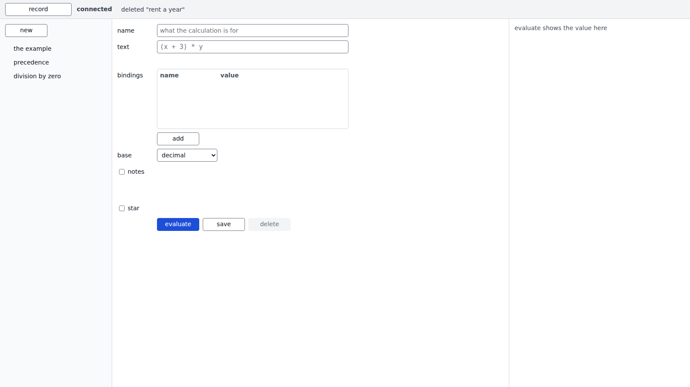
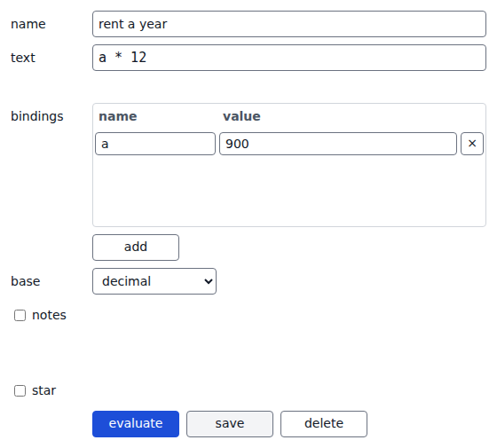
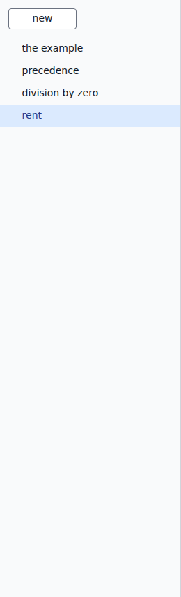
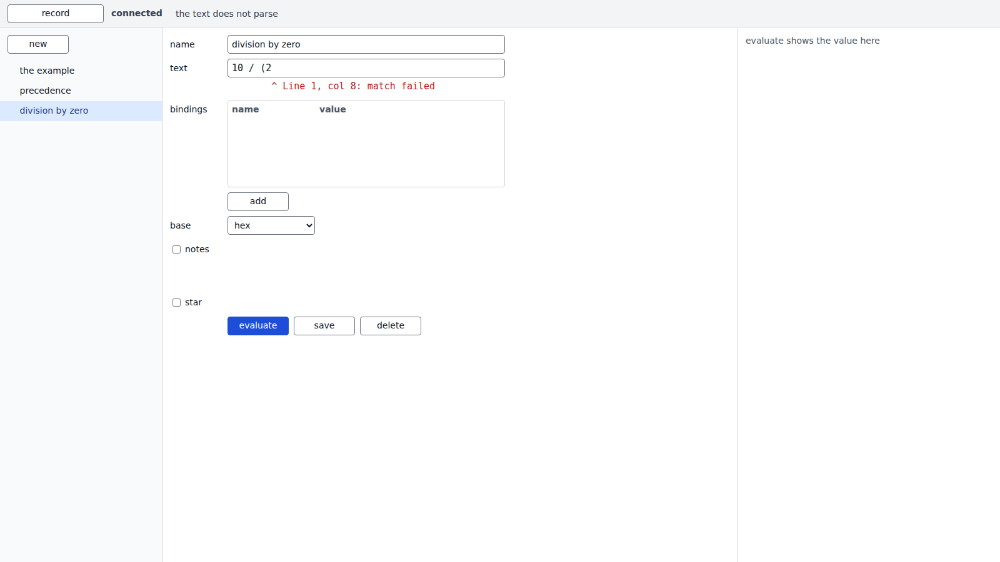
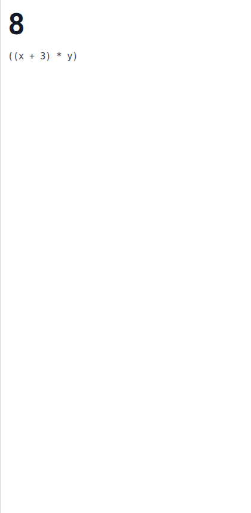
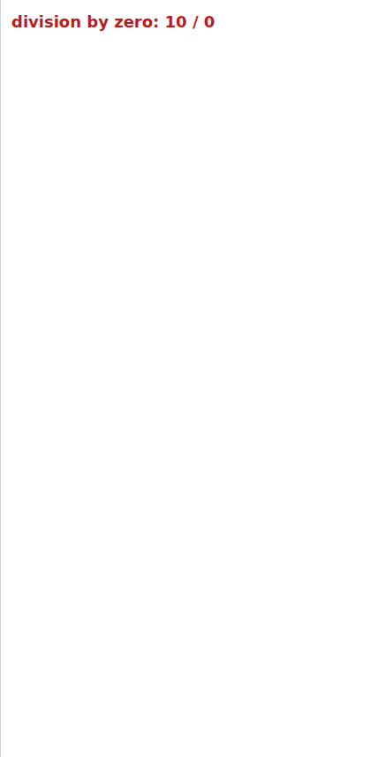
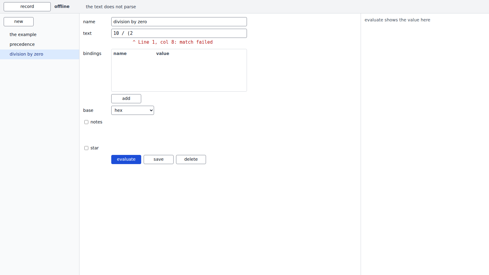
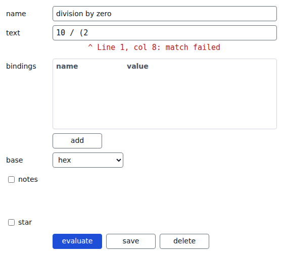
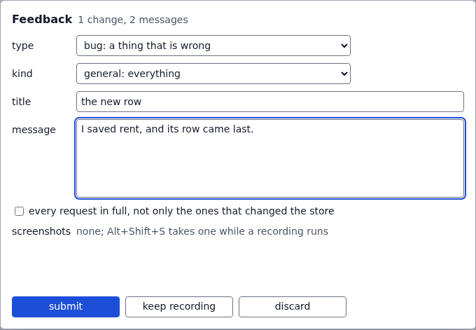
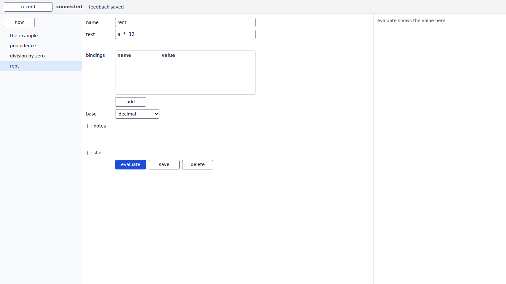

visual diff · phase-4-first-baselines 17 baselines, main, 2026-10-28 18:30, HEAD 0e54af545f83
Each shot: the changed region zoomed from the old and the new baseline, then the changed pixels in magenta.
Under it, the whole old baseline; hover it and the new one takes its place.
The old baseline is the one in git's index; each shot names the commit that wrote it.
The new baseline is the one in the worktree; the commit that adds this page holds it.
crud/connected/end crud/connected/renamed crud/connected/saved crud/offline/end crud/offline/renamed crud/offline/saved evaluate/connected/division evaluate/connected/end evaluate/connected/parse-error evaluate/connected/value evaluate/offline/division evaluate/offline/end evaluate/offline/parse-error evaluate/offline/value report/connected/dialog report/connected/end report/connected/recording
crud / connected/end new · 1600×900
the new baseline; it had none before 
crud / connected/renamed new · 560×505
the new baseline; it had none before 
crud / connected/saved new · 260×856
the new baseline; it had none before
crud / offline/end new · 1600×900
the new baseline; it had none before
crud / offline/renamed new · 560×505
the new baseline; it had none before
crud / offline/saved new · 260×856
the new baseline; it had none before 
evaluate / connected/division new · 420×856
the new baseline; it had none before
evaluate / connected/end new · 1600×900
the new baseline; it had none before 
evaluate / connected/parse-error new · 560×505
the new baseline; it had none before
evaluate / connected/value new · 420×856
the new baseline; it had none before 
evaluate / offline/division new · 420×856
the new baseline; it had none before 
evaluate / offline/end new · 1600×900
the new baseline; it had none before 
evaluate / offline/parse-error new · 560×505
the new baseline; it had none before 
evaluate / offline/value new · 420×856
the new baseline; it had none before
report / connected/dialog new · 680×471
the new baseline; it had none before 
report / connected/end new · 1600×900
the new baseline; it had none before 
report / connected/recording new · 1600×44
the new baseline; it had none before